మూలపాఠం అనువాదం · Telugu source translation
పూర్ణాంకాల సంకలనాన్ని నమూనాలతో చూపడం
సంకలనం అంటే నిజానికి కలిపి లెక్కించడమే. సంకలనాన్ని నమూనాలతో చూపడానికి మనం బ్లాకులను ఉపయోగిస్తాం. గుర్తుంచుకోండి: ఒక చిన్న బ్లాకు విలువ ; ఒక కడ్డీ విలువ ఇప్పుడే చూసిన సంకలన రాతను ముందుగా నమూనాతో చూపుదాం:
ఇక్కడ కలిపే సంఖ్యలన్నిటికంటే పెద్దది కాబట్టి ఒకట్ల బ్లాకులను ఉపయోగించవచ్చు.
చిన్న తెరపై 2 నిలువు వరుసలూ చూడటానికి పట్టికను అడ్డంగా జరపండి.
| మొదటి సంఖ్యను 3 బ్లాకులతో నమూనాగా చూపుతూ ప్రారంభిద్దాం. | అన్ని నిలువు వరుసలను చూడటానికి పటాన్ని అడ్డంగా జరపండి. 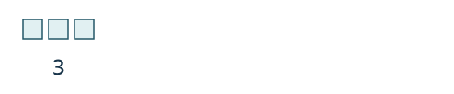 |
| తరువాత రెండో సంఖ్యను 4 బ్లాకులతో నమూనాగా చూపుదాం. | అన్ని నిలువు వరుసలను చూడటానికి పటాన్ని అడ్డంగా జరపండి. 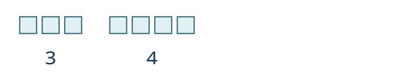 |
| మొత్తం బ్లాకులను లెక్కించండి. | అన్ని నిలువు వరుసలను చూడటానికి పటాన్ని అడ్డంగా జరపండి. 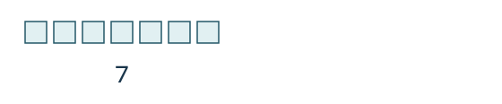 |
మొత్తం బ్లాకులు . ఈ మొత్తాన్ని చూపడానికి సమానత్వ చిహ్నం ఉపయోగిస్తాం. రెండు గణిత రాతల విలువలు సమానమని చెప్పే గణిత వాక్యాన్ని సమానత్వాన్ని తెలిపే వాక్యం (equation) అంటాం. మనం చూపింది:
ఈ సంకలనాన్ని నమూనాతో చూపండి:
సాధన — Solution
అంటే రెండు, ఆరు అనే సంఖ్యల మొత్తం; కలిపే సంఖ్యలు మరియు
కలిపే ప్రతి సంఖ్య 10 కంటే తక్కువ. కాబట్టి ఒకట్ల బ్లాకులను ఉపయోగించవచ్చు.
చిన్న తెరపై 2 నిలువు వరుసలూ చూడటానికి పట్టికను అడ్డంగా జరపండి.
| మొదటి సంఖ్యను 2 బ్లాకులతో నమూనాగా చూపండి. | అన్ని నిలువు వరుసలను చూడటానికి పటాన్ని అడ్డంగా జరపండి. 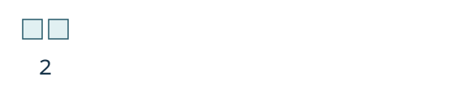 |
| రెండో సంఖ్యను 6 బ్లాకులతో నమూనాగా చూపండి. | అన్ని నిలువు వరుసలను చూడటానికి పటాన్ని అడ్డంగా జరపండి. 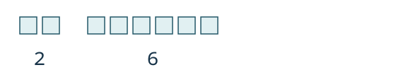 |
| మొత్తం బ్లాకులను లెక్కించండి. | అన్ని నిలువు వరుసలను చూడటానికి పటాన్ని అడ్డంగా జరపండి. 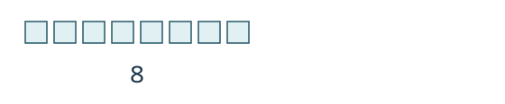 మొత్తం బ్లాకులు . కాబట్టి |
లెక్కించిన ఒకట్ల బ్లాకుల సంఖ్య లేదా అంతకంటే ఎక్కువైతే, వాటిలో బ్లాకుల స్థానంలో ఒక పదుల కడ్డీని తీసుకుంటాం.
ఈ సంకలనాన్ని నమూనాతో చూపండి:
సాధన — Solution
అంటే ఐదు, ఎనిమిది అనే సంఖ్యల మొత్తం; కలిపే సంఖ్యలు మరియు
చిన్న తెరపై 2 నిలువు వరుసలూ చూడటానికి పట్టికను అడ్డంగా జరపండి.
| కలిపే ప్రతి సంఖ్య 10 కంటే తక్కువ. కాబట్టి ఒకట్ల బ్లాకులను ఉపయోగించవచ్చు. | |
| మొదటి సంఖ్యను 5 బ్లాకులతో నమూనాగా చూపండి. | అన్ని నిలువు వరుసలను చూడటానికి పటాన్ని అడ్డంగా జరపండి. 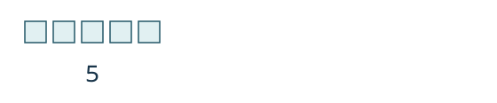 |
| రెండో సంఖ్యను 8 బ్లాకులతో నమూనాగా చూపండి. | అన్ని నిలువు వరుసలను చూడటానికి పటాన్ని అడ్డంగా జరపండి. 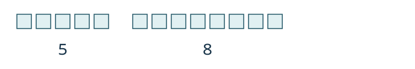 |
| మొత్తాన్ని లెక్కించండి. 10 కంటే ఎక్కువ బ్లాకులు ఉన్నాయి. కాబట్టి 10 ఒకట్ల బ్లాకుల స్థానంలో 1 పదుల కడ్డీని తీసుకుంటాం. | అన్ని నిలువు వరుసలను చూడటానికి పటాన్ని అడ్డంగా జరపండి. 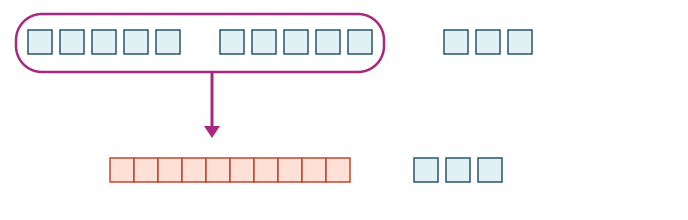 |
| ఇప్పుడు 1 పది, 3 ఒకట్లు ఉన్నాయి; వాటి విలువ 13. | 5 + 8 = 13 |
ఈ నమూనాలను ఒకట్ల బ్లాకులు, పదుల కడ్డీలు అని వివరించవచ్చు; లేదా సంక్షిప్తంగా ఒకట్లు మరియు పదులు అని చెప్పవచ్చు. ఇక నుంచి ఈ చిన్న పదాలను వాడతాం; ఈ సందర్భంలో వాటి అర్థం ఒకటేనని గుర్తుంచుకోండి.
తరువాత రెండు అంకెల సంఖ్యలను కలపడాన్ని నమూనాతో చూపుదాం.
ఈ సంకలనాన్ని నమూనాతో చూపండి:
సాధన — Solution
అంటే 17, 26 అనే సంఖ్యల మొత్తం.
చిన్న తెరపై 3 నిలువు వరుసలూ చూడటానికి పట్టికను అడ్డంగా జరపండి.
| 17 ను నమూనాతో చూపండి. | 1 పది, 7 ఒకట్లు | అన్ని నిలువు వరుసలను చూడటానికి పటాన్ని అడ్డంగా జరపండి. 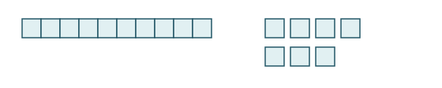 |
| 26 ను నమూనాతో చూపండి. | 2 పదులు, 6 ఒకట్లు | అన్ని నిలువు వరుసలను చూడటానికి పటాన్ని అడ్డంగా జరపండి. 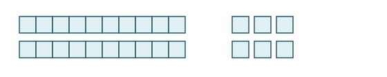 |
| రెండు నమూనాలను కలపండి. | 3 పదులు, 13 ఒకట్లు | అన్ని నిలువు వరుసలను చూడటానికి పటాన్ని అడ్డంగా జరపండి. 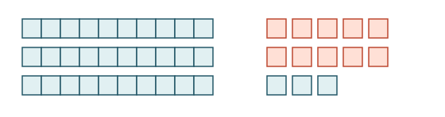 |
| 10 ఒకట్ల స్థానంలో 1 పది తీసుకోండి. | 4 పదులు, 3 ఒకట్లు | అన్ని నిలువు వరుసలను చూడటానికి పటాన్ని అడ్డంగా జరపండి. 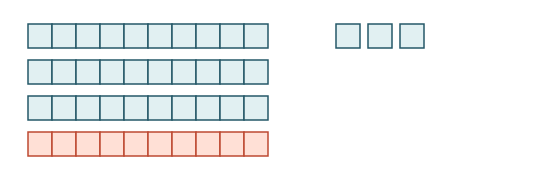 |
| మనం చూపింది: |
బ్లాకులను కలపండి; విలువ మారకుండా పదులుగా సమూహపరచండి
ఈ వివరణలు, మూడు ప్రారంభ తనిఖీలు, మూడు మళ్లీ ప్రయత్నించే ప్రశ్నలు, పూర్తి సాధనలు తెలుగు–English సేతువు కోసం కొత్తగా రాసినవి. ఇవి మూలపాఠంలో భాగం కావు, అధికారిక తరగతి-నిర్ణయ పరీక్షా కావు. ముందుగా నమూనా మీరే గీయండి లేదా వస్తువులతో చూపండి; తరువాత సాధన తెరవండి. వ్యక్తిగత జవాబులను సేకరించము.
ఇప్పుడు చేయాల్సిన పని రాతను మాటల్లో చదవడం మాత్రమే కాదు. ప్రతి కలిపే సంఖ్యకు నమూనా చూపి, వాటిని కలిపి, మొత్తం విలువను సమానత్వంతో రాయాలి. “కలిపే సంఖ్యలు (addends)”, “గణిత రాత (expression)”, “మొత్తం (sum)”, “సమానత్వాన్ని తెలిపే వాక్యం (equation)” అనే వివరణాత్మక పదబంధాలను ఇక్కడ బోధన కోసం వాడుతున్నాం; వాటిని అధికారిక తెలంగాణ లేదా ఆంధ్రప్రదేశ్ పదాలుగా ప్రకటించడం లేదు. సంకలనం అంటే కలపడం; పూర్ణాంకాలలో శూన్యం కూడా ఉంటుంది.
ఒక్కో చిన్న చతురస్రాన్ని ఒకట్ల బ్లాకుగా గీయవచ్చు. అదే పరిమాణం గల పది చిన్న చతురస్రాలను వరుసగా కలిపితే ఒక పదుల కడ్డీ. లేదా సమానమైన పుల్లలను వాడి, ప్రతి పది పుల్లలను ఒక కట్టగా చేయవచ్చు. ఒక చిన్న బ్లాకు లేదా విడి పుల్ల విలువ 1; ఒక పదుల కడ్డీ లేదా పది పుల్లల కట్ట విలువ 10. నమూనాలో రంగు మారినా ఆ విలువ మారదు.
Original instructional support. Model both addends, combine their quantities and state an equality. A unit is worth one; a ten-rod or bundle is worth ten. Regrouping replaces ten units with one ten without changing value. Functional terminology remains provisional, not a claim of official regional usage.
ముందుగా మూడు చిన్న తనిఖీలు
- D01. 2 + 4 ను ఒకట్ల బ్లాకులతో చూపండి. రెండు సమూహాలనూ కలిపి లెక్కించి సమానత్వం రాయండి. సాధన
- D02. 7 + 3 ను నమూనాతో చూపండి. సరిగ్గా పది ఒకట్లు వచ్చినప్పుడు ఏ మార్పు చేయవచ్చు? తరువాత పదులు, ఒకట్లు ఎన్ని? సమానత్వం రాయండి. సాధన
- D03. 18 + 24 ను పదుల కడ్డీలు, ఒకట్ల బ్లాకులతో చూపండి. కలిపిన వెంటనే ఉన్న పదులు–ఒకట్లు, మార్పు తరువాత ఉన్న పదులు–ఒకట్లు, మొత్తం విలువ రాయండి. సాధన
D01 లో రెండు సంఖ్యల నమూనాలను చూపడం లేదా కలిపి లెక్కించడం కష్టమైతే K1 చదివి R01 చేయండి. D02 లో పది ఒకట్ల మార్పు లేదా మిగిలిన ఒకట్ల లెక్క తప్పితే K2 చదివి R02 చేయండి. D03 లో కడ్డీల సంఖ్యను వాటి విలువతో కలగలిపినా, కొత్త పదిని చేర్చడం మరిచినా K3 చదివి R03 చేయండి. అవసరమైతే ఒకటి కంటే ఎక్కువ వివరణలు చదవండి. అన్నీ స్పష్టంగా ఉంటే ఆరు మూల Try It ప్రశ్నలను స్వయంగా చేయండి.
D01 → K1 → R01 checks unit modeling and counting; D02 → K2 → R02 checks exchanging ten ones; D03 → K3 → R03 checks two-digit combination and place values. Correct totals need matching models and reasons, not a fixed score.
K1 · రెండు నమూనాలను కలిపి, ఒకే విలువ గల ప్రమాణాలను లెక్కించండి
మూలంలోని 3 + 4 కోసం ముందుగా మూడు ఒకట్ల బ్లాకులు గీయండి. పక్కన నాలుగు ఒకట్ల బ్లాకులు గీయండి. మొదటి సమూహాన్ని అలాగే ఉంచి రెండోదాన్ని కలపాలి; మొదటి సమూహాన్ని చెరిపి దాని స్థానంలో రెండోదాన్ని గీయకూడదు. ఇప్పుడు బ్లాకులన్నిటినీ ఒక్కొక్కసారి లెక్కిస్తే ఏడు వస్తాయి: 3 + 4 = 7.
ఇక్కడ ప్రతి చిన్న బ్లాకు విలువ ఒకటి కాబట్టి బ్లాకుల లెక్కే మొత్తం విలువ. పదుల కడ్డీలు వచ్చినప్పుడు మాత్రం ప్రతి కడ్డీని ఒక్క ఒకట్ల బ్లాకుగా లెక్కించకండి. ఉదాహరణకు ఒక కడ్డీ, ఏడు విడి బ్లాకులు ఎనిమిది వస్తువులు అయినా, వాటి విలువ 10 + 7 = 17. కడ్డీలోని పది చిన్న గడులూ ఆ పదిని చూపిస్తాయి.
సమానత్వ చిహ్నం = రెండు వైపుల విలువలు సమానమని చెబుతుంది. 3 + 4 అనేది కలపాల్సిన రాత; 3 + 4 = 7 ఆ రాత విలువను కూడా చెబుతుంది. “జవాబు ఇప్పుడు వస్తుంది” అనేదే = యొక్క అర్థం కాదు.
K2 · పది ఒకట్లను ఒక పదిగా మార్చినా విలువ మారదు
మూలంలోని 5 + 8 ఉదాహరణలో కలిపితే 13 ఒకట్ల బ్లాకులు ఉంటాయి. వాటిలో సరిగ్గా 10 బ్లాకులను గుర్తించండి. ఆ పది విడి బ్లాకులను తీసివేసి, వాటి స్థానంలో ఒక పదుల కడ్డీని పెట్టండి. మూడు విడి బ్లాకులు మిగులుతాయి. ఇప్పుడు 1 పది, 3 ఒకట్లు; విలువ 10 + 3 = 13. అందువల్ల 5 + 8 = 13.
పై నమూనా మార్పుకు ముందు, కింది నమూనా మార్పు తరువాత అదే పరిమాణాన్ని చూపుతాయి. వాటిని రెండు వేరు మొత్తాలుగా కలిపి లెక్కించవద్దు. కొత్త కడ్డీ పెట్టిన తరువాత, ఆ కడ్డీగా మార్చిన పది విడి బ్లాకులను మళ్లీ లెక్కించకండి. భౌతిక వస్తువుల సంఖ్య మారవచ్చు; సూచించే విలువ మాత్రం మారదు.
సరిగ్గా 10 ఒకట్లు ఉన్నా మార్పు చేయవచ్చు; 10 కంటే ఎక్కువ కావాల్సిన అవసరం లేదు. పది ఒకట్ల స్థానంలో ఒక పది వస్తుంది, విడి ఒకట్లు 0 ఉంటాయి. పది కంటే తక్కువ ఒకట్లు ఉంటే ఈ మార్పు చేయలేము. ఎరుపు గుర్తు ఎంచుకున్న పది ఒకట్లను, వాటి స్థానంలో వచ్చిన పదిని గుర్తించడానికి మాత్రమే; ఎరుపు రంగు అదనపు విలువ ఇవ్వదు.
The before and after models have the same value. Ten loose units are replaced, not kept alongside an extra ten. Exactly ten units can also be exchanged, leaving zero loose ones.
K3 · పదులను పదులతో, ఒకట్లను ఒకట్లతో కలపండి
మూలంలోని 17 + 26 ఉదాహరణలో 17 కోసం 1 పదుల కడ్డీ, 7 ఒకట్ల బ్లాకులు; 26 కోసం 2 పదుల కడ్డీలు, 6 ఒకట్ల బ్లాకులు తీసుకుంటాం. కడ్డీలను కలిపితే 3; ఒకట్లను కలిపితే 13. మూడు కడ్డీల విలువ 30, మూడు కాదు.
చిన్న తెరపై 4 నిలువు వరుసలూ చూడటానికి పట్టికను అడ్డంగా జరపండి.
| దశ | పదుల కడ్డీల సంఖ్య | విడి ఒకట్ల సంఖ్య | ఆ నమూనా విలువ |
|---|---|---|---|
| మొదటి కలిపే సంఖ్య | 1 | 7 | 10 + 7 = 17 |
| రెండో కలిపే సంఖ్య | 2 | 6 | 20 + 6 = 26 |
| రెండింటినీ కలిపాక, మార్పుకు ముందు | 3 | 13 | 30 + 13 = 43 |
| పది ఒకట్లను ఒక పదిగా మార్చాక | 4 | 3 | 40 + 3 = 43 |
ముందున్న 3 పదులకు కొత్త 1 పది చేరితే 4 పదులు. 13 ఒకట్లలో 10 ను మార్చాం కాబట్టి 3 ఒకట్లు మిగిలాయి. విలువ 30 + 13 = 40 + 3 = 43. అందువల్ల 17 + 26 = 43. పట్టికలో చివరి రెండు వరుసలు ఒకే మొత్తం విలువకు రెండు దశలు; వాటిని మళ్లీ కలిపి లెక్కించకూడదు. “3 పదులు, 13 ఒకట్లు” అని చెప్పడం సరైన మధ్యదశ; ఆ రెండు లెక్కలను పక్కపక్కన రాసి కొత్త సంఖ్యగా చదవడం సరైన పద్ధతి కాదు.
సాధన చూడకుండా మళ్లీ ప్రయత్నించండి
- R01. 4 + 0 ను ఒకట్ల బ్లాకులతో చూపండి. రెండో కలిపే సంఖ్య కోసం ఏమి చూపాలి? మొత్తం విలువ మారుతుందా? సమానత్వం రాయండి. సాధన
- R02. 6 + 7 ను నమూనాతో చూపండి. కలిపిన ఒకట్ల సంఖ్య, మార్చిన బ్లాకుల సంఖ్య, తరువాత పదులు–ఒకట్లు, మొత్తం విలువ చెప్పండి. సాధన
- R03. 27 + 13 ను పదుల కడ్డీలు, ఒకట్ల బ్లాకులతో చూపండి. కలిపిన దశనూ మార్పు తరువాత దశనూ రాయండి. విడి ఒకట్లు మిగలకపోతే జవాబులో ఒకట్ల స్థానంలో ఏమి రాస్తారు? సాధన
మొత్తం సంఖ్యతో పాటు ప్రతి నమూనా విలువను వివరించగలిగితే సంబంధిత నైపుణ్యం స్పష్టమవుతోంది. సంఖ్య సరైనదైనా కారణం తప్పితే K1–K3 లో సంబంధిత వివరణను చూడండి. ఈ జవాబులను ముందే చూసి ఉంటే, కొంత విరామం తరువాత నమూనాను మళ్లీ గీసి కారణాన్ని మీ మాటల్లో చెప్పండి; కంఠస్థ జవాబును కొత్త స్వతంత్ర తనిఖీగా భావించవద్దు.
కొత్త తనిఖీలకు పూర్తి సాధనలు
D01 · 2 + 4
రెండు ఒకట్ల బ్లాకులు గీయండి; పక్కన నాలుగు ఒకట్ల బ్లాకులు గీయండి. రెండు సమూహాలను కలిపి ప్రతి బ్లాకును ఒక్కసారి లెక్కిస్తే 6 ఒకట్లు వస్తాయి. పది ఒకట్లు లేవు కాబట్టి పదుల కడ్డీగా మార్చాల్సిన అవసరం లేదు. జవాబు 2 + 4 = 6; నమూనా 0 పదులు, 6 ఒకట్లు.
Two unit blocks and four unit blocks combine to six ones. No ten-rod is formed.
D02 · 7 + 3: సరిగ్గా పది
ఏడు ఒకట్ల బ్లాకుల పక్కన మూడు ఒకట్ల బ్లాకులు ఉంచితే 10 ఒకట్లు. వాటన్నిటి స్థానంలో 1 పదుల కడ్డీ పెట్టండి; 0 విడి ఒకట్లు మిగులుతాయి. మార్పుకు ముందు 0 పదులు, 10 ఒకట్లు; తరువాత 1 పది, 0 ఒకట్లు. విలువ 10 + 0 = 10. జవాబు 7 + 3 = 10. పది ఒకట్లు సరిగ్గా ఉన్నా ఈ మార్పు చెల్లుతుంది; ఒక కడ్డీ ఉందని విలువ ఒకటి అనకూడదు.
Exactly ten ones become one ten and zero ones. The number of pieces changes, but the value remains ten.
D03 · 18 + 24
- 18 ను 1 పది, 8 ఒకట్లుగా చూపండి: 10 + 8 = 18.
- 24 ను 2 పదులు, 4 ఒకట్లుగా చూపండి: 20 + 4 = 24.
- కలిపితే 3 పదులు, 12 ఒకట్లు. వాటి విలువ 30 + 12 = 42.
- 12 ఒకట్లలో 10 ను కొత్త పదుల కడ్డీగా మార్చండి. ఇప్పుడు 4 పదులు, 2 ఒకట్లు; విలువ 40 + 2 = 42.
జవాబు 18 + 24 = 42. కొత్త పదిని ముందున్న పదులకు చేర్చాలి; మార్పులో వాడిన పది ఒకట్లను విడిగా మళ్లీ ఉంచకూడదు.
One ten/eight ones and two tens/four ones combine to three tens/twelve ones. Exchange ten ones to obtain four tens/two ones.
R01 · 4 + 0
మొదటి సంఖ్య కోసం 4 ఒకట్ల బ్లాకులు గీయండి. రెండో సమూహానికి 0 అని గుర్తు పెట్టవచ్చు, కానీ అందులో బ్లాకులు ఉండవు. “శూన్యం” కోసం విలువ ఒకటి గల అదనపు బ్లాకును గీయకండి. కలిపినా 4 ఒకట్లే ఉంటాయి; పదుల కడ్డీ అవసరం లేదు. జవాబు 4 + 0 = 4; నమూనా 0 పదులు, 4 ఒకట్లు.
The second addend has no unit blocks. Adding zero leaves four ones unchanged.
R02 · 6 + 7
ఆరు ఒకట్ల బ్లాకుల పక్కన ఏడు ఒకట్ల బ్లాకులు ఉంచండి. కలిపితే 13 ఒకట్లు, అంటే 0 పదులు, 13 ఒకట్లు. వాటిలో 10 బ్లాకుల స్థానంలో 1 పదుల కడ్డీ తీసుకుంటే 3 విడి బ్లాకులు మిగులుతాయి. తరువాత 1 పది, 3 ఒకట్లు; విలువ 10 + 3 = 13. జవాబు 6 + 7 = 13. పదుల కడ్డీతో పాటు మిగిలిన మూడు బ్లాకులనే లెక్కించాలి.
Thirteen ones regroup as one ten and three ones. The exchanged ten units are replaced by the rod, not counted again.
R03 · 27 + 13: విడి ఒకట్లు మిగలవు
- 27 ను 2 పదులు, 7 ఒకట్లుగా చూపండి: 20 + 7 = 27.
- 13 ను 1 పది, 3 ఒకట్లుగా చూపండి: 10 + 3 = 13.
- కలిపితే 3 పదులు, 10 ఒకట్లు; విలువ 30 + 10 = 40.
- ఆ పది ఒకట్ల స్థానంలో కొత్త పదుల కడ్డీ పెట్టండి. ఇప్పుడు 4 పదులు, 0 ఒకట్లు; విలువ 40 + 0 = 40.
జవాబు 27 + 13 = 40. విడి ఒకట్లు లేవని ఒకట్ల స్థానంలో 0 రాయాలి. నాలుగు పదుల కడ్డీల విలువ నలభై; జవాబును కేవలం నాలుగు అని రాయకూడదు.
Three tens and ten ones become four tens and zero ones. Write zero in the ones place of forty.
ఆరు మూల Try It ప్రశ్నలకు కొత్త పూర్తి వివరణలు
మూల సాధన చిత్రాలు చివరి నమూనాలను చూపుతాయి. ఇక్కడ ఆ నమూనాలు ఎలా వచ్చాయో విడివిడిగా వివరిస్తున్నాం. ఒకట్ల బ్లాకులు, పదుల కడ్డీలు గీయడం లేదా సమానమైన పుల్లల నమూనా చేయడం రెండూ సరిపోతాయి; ప్రతి నమూనాలో విలువలు ఒకేలా ఉండాలి.
Try It 1 · 3 + 6
మూల ప్రశ్న కోసం 3 ఒకట్ల బ్లాకులు, పక్కన 6 ఒకట్ల బ్లాకులు చూపండి. మొదటి మూడు తరువాత రెండో సమూహంలోని బ్లాకులను లెక్కిస్తే 4, 5, 6, 7, 8, 9 వస్తాయి. మొత్తం 9 ఒకట్లు; పది కంటే తక్కువ కాబట్టి మార్పు అవసరం లేదు.
చివరి నమూనా 0 పదులు, 9 ఒకట్లు. జవాబు 3 + 6 = 9. మూల చిత్రంలోని రెండు సమూహాల మొత్తం లెక్క కూడా ఇదే.
Three unit blocks plus six unit blocks give nine ones. No regrouping is needed.
Try It 2 · 5 + 1
మూల ప్రశ్న కోసం 5 ఒకట్ల బ్లాకులు, పక్కన 1 ఒకట్ల బ్లాకు గీయండి. ఐదు తరువాత మరో ఒక్క బ్లాకును లెక్కిస్తే ఆరు. మొత్తం 6 ఒకట్లు; పదుల కడ్డీగా మార్చే పది ఒకట్లు లేవు.
చివరి నమూనా 0 పదులు, 6 ఒకట్లు. జవాబు 5 + 1 = 6. కొత్త బ్లాకు ముందున్న ఐదింటికి చేరుతుంది; వాటి స్థానంలో రావడం కాదు.
Five units and one more unit give six ones. Both addend groups remain in the combined quantity.
Try It 3 · 5 + 7
మూల ప్రశ్న కోసం 5 ఒకట్ల బ్లాకులు, పక్కన 7 ఒకట్ల బ్లాకులు చూపండి. కలిపితే 12 ఒకట్లు; మార్పుకు ముందు 0 పదులు, 12 ఒకట్లు. మొదటి ఐదింటికి రెండో సమూహం నుంచి ఐదు కలిపి పది బ్లాకులను గుర్తించండి; రెండో సమూహంలో మరో రెండు మిగులుతాయి.
ఆ 10 బ్లాకుల స్థానంలో 1 పదుల కడ్డీ తీసుకోండి. తరువాత 1 పది, 2 ఒకట్లు; విలువ 10 + 2 = 12. జవాబు 5 + 7 = 12. మూల సాధన చిత్రంలో ఆ ఒక కడ్డీ, రెండు విడి బ్లాకులే ఉన్నాయి.
Twelve ones become one ten and two ones. Ten units are exchanged; two units remain loose.
Try It 4 · 6 + 8
మూల ప్రశ్న కోసం 6 ఒకట్ల బ్లాకులు, పక్కన 8 ఒకట్ల బ్లాకులు చూపండి. కలిపితే 14 ఒకట్లు; మార్పుకు ముందు 0 పదులు, 14 ఒకట్లు. మొదటి ఆరింటికి రెండో సమూహం నుంచి నాలుగు కలిపితే పది; రెండో సమూహంలో మరో నాలుగు మిగులుతాయి.
గుర్తించిన 10 బ్లాకుల స్థానంలో 1 పదుల కడ్డీ తీసుకోండి. తరువాత 1 పది, 4 ఒకట్లు; విలువ 10 + 4 = 14. జవాబు 6 + 8 = 14. మూల సాధన చిత్రంలోని కడ్డీ, నాలుగు విడి బ్లాకులు ఇదే విలువను చూపుతాయి.
Fourteen ones regroup as one ten and four ones, with the same total value.
Try It 5 · 15 + 27
మూల ప్రశ్నలో రెండు కలిపే సంఖ్యలకు ముందుగా వేర్వేరు నమూనాలు చేయండి.
- 15 కోసం 1 పది, 5 ఒకట్లు: 10 + 5 = 15.
- 27 కోసం 2 పదులు, 7 ఒకట్లు: 20 + 7 = 27.
- కలిపితే 3 పదులు, 12 ఒకట్లు; విలువ 30 + 12 = 42.
- 12 ఒకట్లలో 10 బ్లాకులను కొత్త పదుల కడ్డీగా మార్చండి. ముందున్న మూడు కడ్డీలకు అది చేరితే 4 పదులు; 2 ఒకట్లు మిగులుతాయి.
చివరి నమూనా 4 పదులు, 2 ఒకట్లు; విలువ 40 + 2 = 42. జవాబు 15 + 27 = 42. మూల చిత్రంలోని నాలుగు కడ్డీలు, రెండు విడి బ్లాకులతో ఇది సరిపోతుంది.
One ten/five ones and two tens/seven ones combine to three tens/twelve ones. Exchange ten ones to obtain four tens/two ones.
Try It 6 · 16 + 29
మూల ప్రశ్నలో ఇచ్చిన రెండు సంఖ్యలను వాటి పదులు, ఒకట్లుగా చూపండి.
- 16 కోసం 1 పది, 6 ఒకట్లు: 10 + 6 = 16.
- 29 కోసం 2 పదులు, 9 ఒకట్లు: 20 + 9 = 29.
- కలిపితే 3 పదులు, 15 ఒకట్లు; విలువ 30 + 15 = 45.
- 15 ఒకట్లలో 10 బ్లాకుల స్థానంలో కొత్త పదుల కడ్డీ తీసుకోండి. ఇప్పుడు 4 పదులు, 5 ఒకట్లు ఉంటాయి.
చివరి నమూనా విలువ 40 + 5 = 45. జవాబు 16 + 29 = 45. మూల చిత్రంలోని నాలుగు కడ్డీల విలువ నలభై; పక్కన ఐదు ఒకట్లు ఉన్నాయి. కడ్డీల సంఖ్య నాలుగు అని వాటి విలువను నాలుగుగా తీసుకోకండి.
Three tens and fifteen ones become four tens and five ones. The four rods represent forty, not four units.
మూల గమనికలో “Model Addition of Whole Numbers” అనే వర్క్షీట్ కృత్యం ప్రస్తావన ఉంది. ఈ ఉపవిభాగంలో ఆ వర్క్షీట్ జతచేయలేదు, దానికి లింకూ ఇవ్వలేదు. పైన ఇచ్చిన వివరణలు, తనిఖీలు కొత్త సహాయక రచన మాత్రమే; అవి ఆ వర్క్షీట్ అనువాదమో, దాన్ని పూర్తి చేశారనే ధృవీకరణో కావు. ఇక్కడి బ్లాకు చిత్రాలు, కాగితంపై గీసిన నమూనాలు లేదా సమానమైన పుల్లలతో ఈ పాఠంలోని సంకలనాన్ని అభ్యసించవచ్చు.
The source mentions a worksheet activity but supplies no activity link in this subsection. These original explanations do not reproduce that worksheet or claim its completion.
Read the parallel canonical English subsection
Model Addition of Whole Numbers
Addition is really just counting. We will model addition with blocks. Remember, a block represents and a rod represents Let’s start by modeling the addition expression we just considered,
Each addend is less than so we can use ones blocks.
Scroll sideways to see all 2 content columns.
| We start by modeling the first number with 3 blocks. | Scroll sideways to inspect every column. 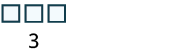 |
| Then we model the second number with 4 blocks. | Scroll sideways to inspect every column.  |
| Count the total number of blocks. | Scroll sideways to inspect every column.  |
There are blocks in all. We use an equal sign to show the sum. A math sentence that shows that two expressions are equal is called an equation. We have shown that.
Model the addition
Solution
means the sum of and
Each addend is less than 10, so we can use ones blocks.
Scroll sideways to see all 2 content columns.
| Model the first number with 2 blocks. | Scroll sideways to inspect every column.  |
| Model the second number with 6 blocks. | Scroll sideways to inspect every column.  |
| Count the total number of blocks | Scroll sideways to inspect every column.  There are blocks in all, so |
When the result is or more ones blocks, we will exchange the blocks for one rod.
Model the addition
Solution
means the sum of and
Scroll sideways to see all 2 content columns.
| Each addend is less than 10, se we can use ones blocks. | |
| Model the first number with 5 blocks. | Scroll sideways to inspect every column. |
| Model the second number with 8 blocks. | Scroll sideways to inspect every column. |
| Count the result. There are more than 10 blocks so we exchange 10 ones blocks for 1 tens rod. | Scroll sideways to inspect every column.  |
| Now we have 1 ten and 3 ones, which is 13. | 5 + 8 = 13 |
Notice that we can describe the models as ones blocks and tens rods, or we can simply say ones and tens. From now on, we will use the shorter version but keep in mind that they mean the same thing.
Next we will model adding two digit numbers.
Model the addition:
Solution
means the sum of 17 and 26.
Scroll sideways to see all 3 content columns.
| Model the 17. | 1 ten and 7 ones | Scroll sideways to inspect every column. |
| Model the 26. | 2 tens and 6 ones | Scroll sideways to inspect every column. 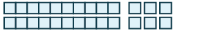 |
| Combine. | 3 tens and 13 ones | Scroll sideways to inspect every column. 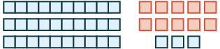 |
| Exchange 10 ones for 1 ten. | 4 tens and 3 ones | Scroll sideways to inspect every column. 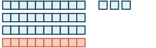 |
| We have shown that |